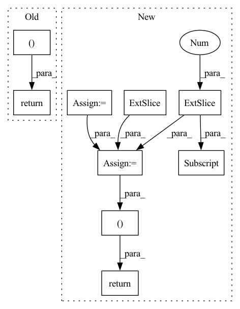

Pattern ID :15088
Before Change
else:
seq_mask = None
return att_feats, seq, att_masks, seq_mask
def _forward(self, fc_feats, att_feats, seq, att_masks=None, labels=None):
att_feats, seq, att_masks, seq_mask = self._prepare_feature_forward(att_feats, att_masks, seq, labels)
out = self.model(att_feats, seq, att_masks, seq_mask, memory_matrix=self.memory_matrix, labels = labels)After Change
// Memory querying and responding for visual features
//dummy_memory_matrix = self.memory_matrix.unsqueeze(0).expand(att_feats.size(0), self.memory_matrix.size(0), self.memory_matrix.size(1))
max_num_protype = max((labels[:,-1] *3 + labels[:,:-1].sum(-1))) * self.num_prototype
query_matrix = self.memory_matrix.new_zeros(att_feats.size(0), max_num_protype, self.memory_matrix.shape[-1])
cmn_masks = self.memory_matrix.new_zeros(query_matrix.shape[0], att_feats.size(1), max_num_protype)
for i in range(att_feats.size(0)):
cur_query_matrix = []
//print(labels[i])
for j in range(len(labels[i])):
if labels[i, j] == 1:
if j != len(labels[i])-1:
cur_query_matrix.extend(self.memory_matrix[j*self.num_prototype:(j+1)*self.num_prototype, :])
else:
cur_query_matrix.extend(self.memory_matrix[j * self.num_prototype:, :])
cur_query_matrix = torch.stack(cur_query_matrix, 0)
//print("111",query_matrix[i, :cur_query_matrix.shape[0], :].shape, cur_query_matrix.shape)
query_matrix [i, :cur_query_matrix.shape[0], :] = cur_query_matrix
cmn_masks[i, :, :cur_query_matrix.shape[0]] = 1
responses = self.cmn(att_feats, query_matrix, query_matrix, cmn_masks)
//embeddings = embeddings + responses
att_feats = att_feats + responses
"""
dummy_memory_matrix = torch.stack([self.memory_matrix[labels[i]==1,:] for i in range(att_feats.size(0))])
//dummy_memory_matrix = torch.stack([torch.cat([self.memory_matrix, self.global_memory], 0) for index in idxs])
responses = self.cmn(att_feats, dummy_memory_matrix, dummy_memory_matrix)
att_feats = att_feats + responses
"""
// Memory querying and responding for visual features
att_masks = att_masks.unsqueeze(-2)
if seq is not None:
seq = seq[:, :-1]
seq_mask = (seq.data > 0)
seq_mask[:, 0] += True
seq_mask = seq_mask.unsqueeze(-2)
seq_mask = seq_mask & subsequent_mask(seq.size(-1)).to(seq_mask)
else:
seq_mask = None
return att_feats, seq, att_masks, seq_mask, query_matrix, cmn_masks[:,0,:]
def _forward(self, fc_feats, att_feats, seq, att_masks=None, labels=None):
att_feats, seq, att_masks, seq_mask, query_matrix, cmn_masks = \
self._prepare_feature_forward(att_feats, att_masks, seq, labels)In pattern: SUPERPATTERN
Frequency: 3
Non-data size: 9
Instances Fragment ID: 50979130
Project Name: markin-wang/xpronet
Commit Name: f1eadeb44fcd3ca935352b9cc7d30eab0fa8c753
Time: 2021-11-21
Author: cserwj@gmail.com
File Name: modules/base_cmn.py
M Class Name: BaseCMN
N Class Name: BaseCMN
M Method Name: _prepare_feature_forward(5)
N Method Name: _prepare_feature_forward(5)
M Parent Class: AttModel
N Parent Class: AttModel
M File Name: modules/base_cmn.py
N File Name: modules/base_cmn.py
M Start Line: 402
M End Line: 451
N Start Line: 391
N End Line: 444
Before Change
return cv2.morphologyEx(img, cv2.MORPH_DILATE, kernel=np.ones((2, 2)))
return inner(positive_mask), inner(negative_mask)
def refine(img, seg_img, thresh=100, noise_objects_size=20):
positive_mask, negative_mask = positive_negative_masks(seg_img, thresh, noise_objects_size)After Change
negative_mask[red >= blue] = 0
cell_mapping = np.zeros_like(mask)
cell_mapping[:, :, 0] = positive_mask
cell_mapping [:, :, 2] = negative_mask
compute_cell_mapping(cell_mapping, mask.shape, small_object_size=50)
cell_mapping[cell_mapping > 0] = 255
positive_mask = cell_mapping[:, :, 0]
negative_mask = cell_mapping[:, :, 2]
def inner(img):
img = remove_small_objects_from_image(img, noise_objects_size)
img = ndi.binary_fill_holes(img).astype(np.uint8)
return cv2.morphologyEx(img, cv2.MORPH_DILATE, kernel=np.ones((2, 2)))
// return inner(positive_mask), inner(negative_mask)
return remove_noises_fill_empty_holes(positive_mask, noise_objects_size), remove_noises_fill_empty_holes(negative_mask, noise_objects_size)
def refine(img, seg_img, thresh=100, noise_objects_size=20):
positive_mask, negative_mask = positive_negative_masks(seg_img, thresh, noise_objects_size) Fragment ID: 50979162
Project Name: nadeemlab/deepliif
Commit Name: 194b1adf21c08ba47d8f12a44a0aa9abd3b53e78
Time: 2021-10-08
Author: ghahremani.parmida@gmail.com
File Name: deepliif/postprocessing.py
M Class Name: AnonimousClass
N Class Name: AnonimousClass
M Method Name: positive_negative_masks(3)
N Method Name: positive_negative_masks(3)
M Parent Class:
N Parent Class:
M File Name: deepliif/postprocessing.py
N File Name: deepliif/postprocessing.py
M Start Line: 83
M End Line: 99
N Start Line: 158
N End Line: 186
Before Change
u = torch.tensor(u, dtype=torch.float32)
v = torch.tensor(v, dtype=torch.float32)
p = torch.tensor(p, dtype=torch.float32)
return x, y, t, u, v, p, N, T
// 定义网络结构,由layer列表指定网络层数和神经元数
After Change
p = PP.flatten()[:, None]
temp = np.concatenate((x,y,t,u,v,p),1)
feature_mat = np.empty((2, 6))
feature_mat[0, :] = np.max(temp, 0)
feature_mat [1, :] = np.min(temp, 0)
x = torch.tensor(x, dtype=torch.float32)
y = torch.tensor(y, dtype=torch.float32)
t = torch.tensor(t, dtype=torch.float32)
u = torch.tensor(u, dtype=torch.float32)
v = torch.tensor(v, dtype=torch.float32)
p = torch.tensor(p, dtype=torch.float32)
feature_mat = torch.tensor(feature_mat, dtype=torch.float32)
return x, y, t, u, v, p, N, T, feature_mat
def read_data_portion(filename, portion):
Fragment ID: 50979190
Project Name: shengfeng233/pinn-for-ns-equation
Commit Name: 4e7c12794c97df9cd7c2097437954c96e614a65f
Time: 2021-12-02
Author: 58844155+Shengfeng233@users.noreply.github.com
File Name: pinn_model.py
M Class Name: AnonimousClass
N Class Name: AnonimousClass
M Method Name: read_data(1)
N Method Name: read_data(1)
M Parent Class:
N Parent Class:
M File Name: pinn_model.py
N File Name: pinn_model.py
M Start Line: 26
M End Line: 48
N Start Line: 28
N End Line: 55